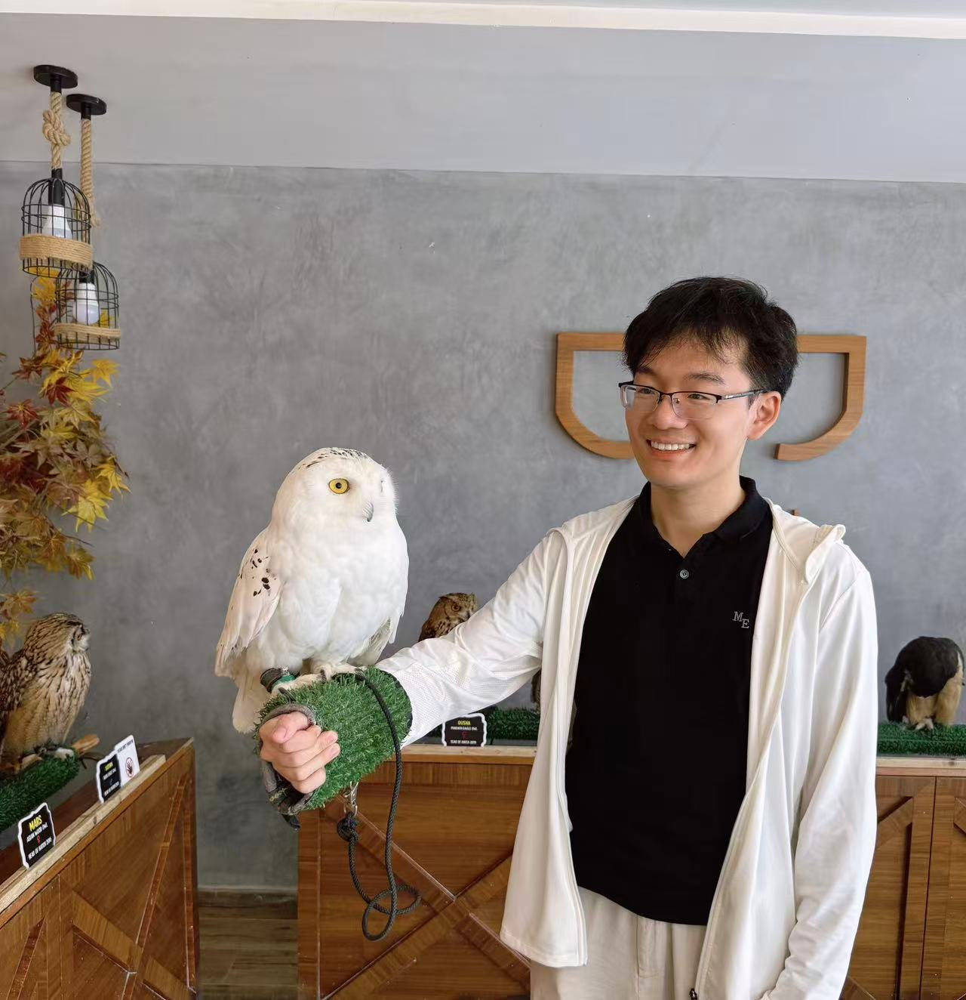

Xiu-Chuan Li (李修川)Ph.D. Student
Sydney AI Centre
Address: J12/ 1 Cleveland St, Darlington, NSW 2008, Australia |
 |
I am a Ph.D. student at the School of Computer Science, The University of Sydney (USYD). I received the master's degree from Institute of Automation, Chinese Academy of Science in 2023. I received the bachelor's degree from School of Automation Science and Electrical Engineering, Beihang University in 2020. My research focuses on causal discovery and trustworthy machine learning.
PhD student, 2024.03 - 2027.09 (expected) School of Computer Science, University of Sydney, Australia, advised by Prof. Tongliang Liu
M.Eng., 2020.09 - 2023.06 Institute of Automation, Chinese Academy of Science, China, advised by Prof. Xu-Yao Zhang and Prof. Cheng-Lin Liu
B.Eng., 2016.09 - 2020.06 School of Automation Science and Electrical Engineering, Beihang University, China
Recovery of Causal Graph Involving Latent Variables via Homologous Surrogates[paper][code]
Xiu-Chuan Li, Jun Wang, Tongliang Liu
ICLR 2025
Efficient and Trustworthy Causal Discovery with Latent Variables and Complex Relations[paper][code]
Xiu-Chuan Li, Tongliang Liu
ICLR 2025
Causal Structure Recovery with Latent Variables under Milder Distributional and Graphical Assumptions[paper][code]
Xiu-Chuan Li, Kun Zhang, Tongliang Liu
ICLR 2024
Dynamics-Aware Loss for Learning with Label Noise[paper][code]
Xiu-Chuan Li, Xiaobo Xia, Fei Zhu, Tongliang Liu, Xu-Yao Zhang, Cheng-Lin Liu
PR 2023
Decision-based Adversarial Attack with Frequency Mixup[paper][code]
Xiu-Chuan Li, Xu-Yao Zhang, Fei Yin, Cheng-Lin Liu
IEEE T-IFS 2022
Conference Reviewer: ICLR (2025, 2024), ICML (2025, 2024, 2023), NeurIPS (2024, 2023), UAI (2025, 2024), AISTATS (2025)
Conference Reviewer: IEEE T-IFS, TMLR
| © Xiu-Chuan Li | Last update: Feb. 2025 |